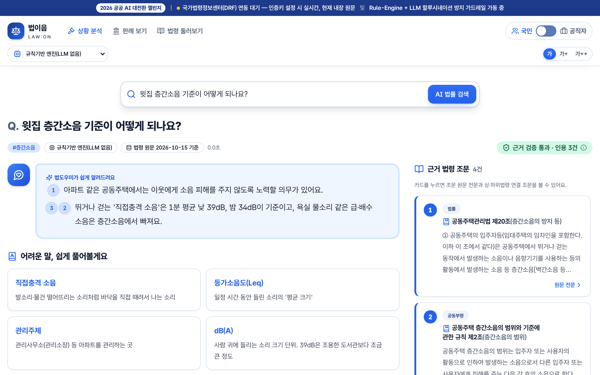
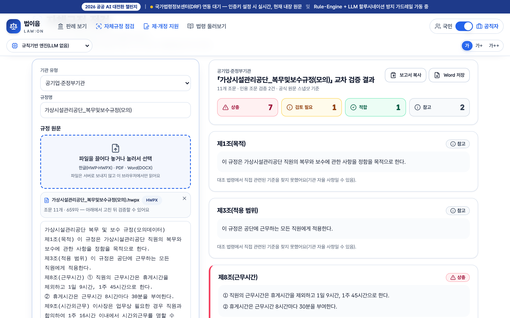
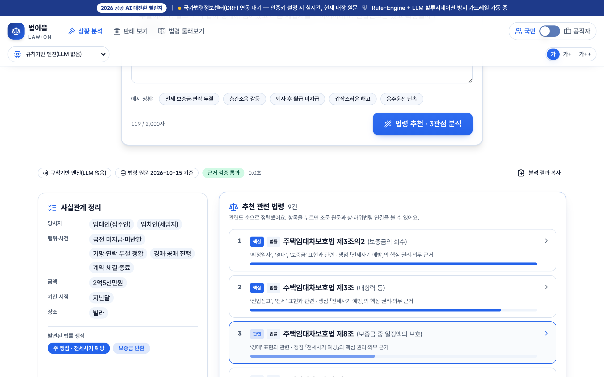
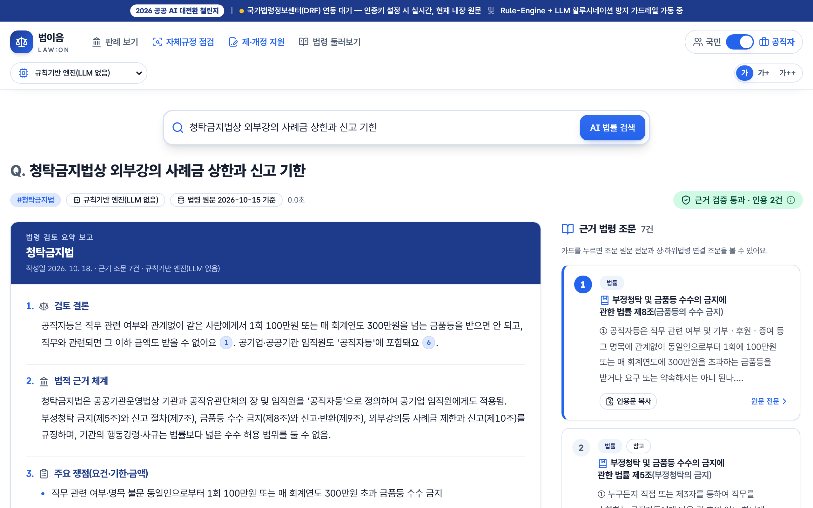

국민·공직자 듀얼 모드 AI 법률 지능형 포털 · 근거 조문 인용 + 환각 방지 + 자체규정 점검
| 실행 환경 |
· 첫 화면은 국민 모드, 오른쪽 위 스위치로 공직자 모드. ②·③도 판례·실시간 법령을 클라우드 서버를 거쳐 받아 심사위원 PC에 인증키·IP 등록이 필요 없습니다. | |||||||||||||||
|---|---|---|---|---|---|---|---|---|---|---|---|---|---|---|---|---|
| 설치·실행 절차 |
① 주소창에 https://lawon.onrender.com(무료 클라우드라 잠들어 있으면 첫 화면까지 30초~1분) · ② GitLab의 LAW-ON_share.html(또는 웹 바닥글 ‘공유판 내려받기’)을 더블클릭 ③ Python 실행판(공공 GitLab 산출물의 law-on-python.zip)
| |||||||||||||||
| LLM 연결 설정 |
.env.example을 .env.local로 복사해 값만 넣고, 화면 왼쪽 위 ‘AI 모델’ 메뉴에서 즉시 전환(키는 서버에만 둠).
· 모델 교체 시 코드 수정 없음(어댑터 구조). 모든 모델이 같은 인용 검증 가드를 거쳐 근거 밖 조문은 제거하거나 규칙기반 답변으로 대체합니다. | |||||||||||||||
| 모의데이터 안내 |
제출 폴더 모의데이터/(GitLab submission/mock-data/) — 가상 기관 이름으로 새로 쓴 규정, 개인정보·민감정보 없음
투입: 공직자 모드 → 자체규정 점검 → ‘모의데이터로 바로 체험’ 버튼 한 번(같은 파일 내장, 검증까지 자동) 또는 점선 상자에 끌어다 놓기. 원본은 수정·이동·삭제하지 않습니다. |
| 기능 사용 순서 |
 흐름 1 — 문장마다 근거 번호, 3단계 행동 안내  흐름 3 — 한글 규정 파일 점검: 상충 7 · 검토 1  흐름 1 — 사실관계 정리 + 관련 법령 추천 순위  흐름 2 — 공직자 검토 결론·근거 체계 |
|---|
| 알려진 제약 사항 |
|
|---|---|
| 개발 경위 요약 |
문제 인식법은 국민 생활 곳곳에 닿아 있지만 조문은 어렵고, 생성형 AI는 그럴듯한 가짜 조문·판례를 만들어 공공 서비스에 바로 쓰기 어렵습니다. 공직자는 민원 회신·검토 보고서를 쓸 때마다 근거 조문을 찾아 옮겨 적고, 기관의 취업규칙·행동강령·재산관리 규정이 상위법 개정을 따라가지 못해 감사·노사 분쟁에서 지적되는 일이 반복됩니다. 접근 방식① 근거부터 찾고 답은 나중에 — 질문을 토픽·조문 검색으로 먼저 연결해 공식 원문을 확보하고, AI에는 그 조문만 주며 문장마다 근거 표식을 붙이게 했습니다. 근거 목록 밖 인용은 서버에서 지우고, 형식이 깨지면 규칙기반 답변으로 바꿉니다. 근거 카드에는 AI 문장이 아니라 법령 원문만 보여 줍니다. ② 한 엔진, 두 개의 화면 — 같은 근거를 국민에게는 쉬운 말·3단계 행동·기관 연락처로, 공직자에게는 검토 결론·근거 체계·체크리스트·공문서 서식으로 보여 줍니다. ③ 기관 규정까지 확장 — 한글·PDF·Word 규정 파일을 브라우저 안에서 읽어 조문 단위로 상위법과 대조하고(수치 기준·허용 조항·인용 조문 실재 여부), 개정안과 신·구조문 대비표까지 이어지게 했습니다. 판정은 생성형 문장이 아니라 정해진 기준과 원문으로 합니다. ④ 바로 옮겨 쓸 수 있는 구조 — LLM은 어댑터로 분리해 폐쇄망 Ollama(EXAONE·Gemma 등)부터 OpenAI 호환 서버까지 설정만으로 교체하고, 인증키·LLM이 없어도 동작하게 했습니다. 정보화사업 이관을 고려해 Next.js(TypeScript)판과 추가 설치 없는 Python 실행판을 함께 두고, 두 엔진의 결과가 같은지 자동 시험으로 확인합니다(TypeScript 시험 128건, Python 시험 31건). 기대 효과·확산국민은 상황을 말하기만 하면 근거와 할 일을 한 화면에서 얻고, 공직자는 근거 조사·보고서 초안·규정 점검을 한 곳에서 처리합니다. 대조 법령과 점검 기준은 데이터로 분리돼 있어 기관별 규정(복무·보수·감사·계약 등)과 법령을 추가하는 방식으로 다른 기관·업무에 그대로 확산할 수 있습니다. |